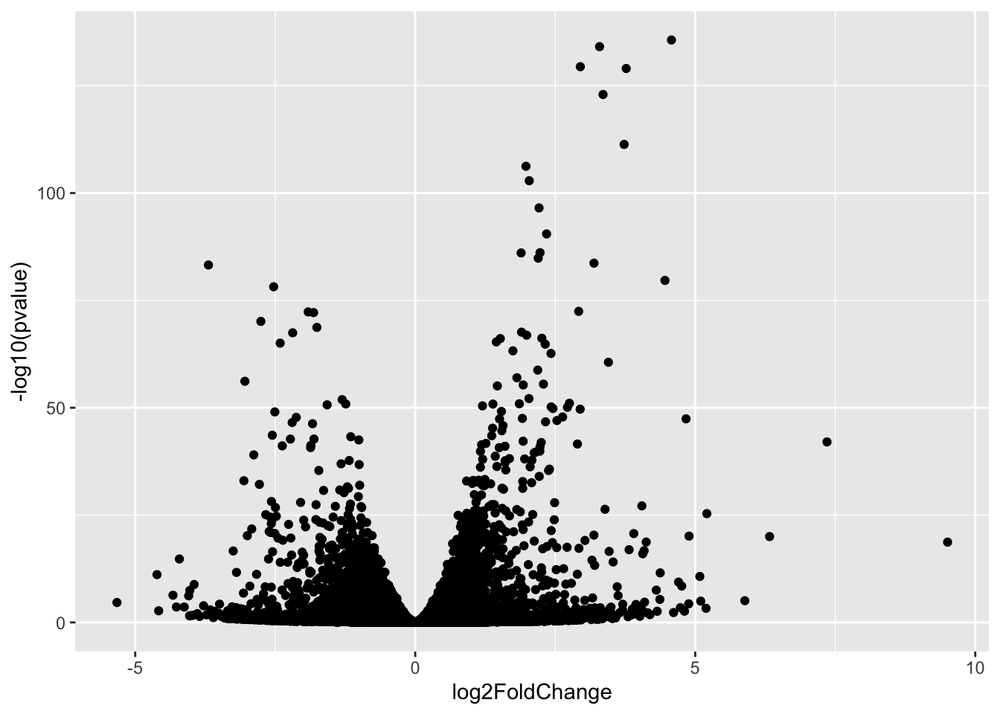
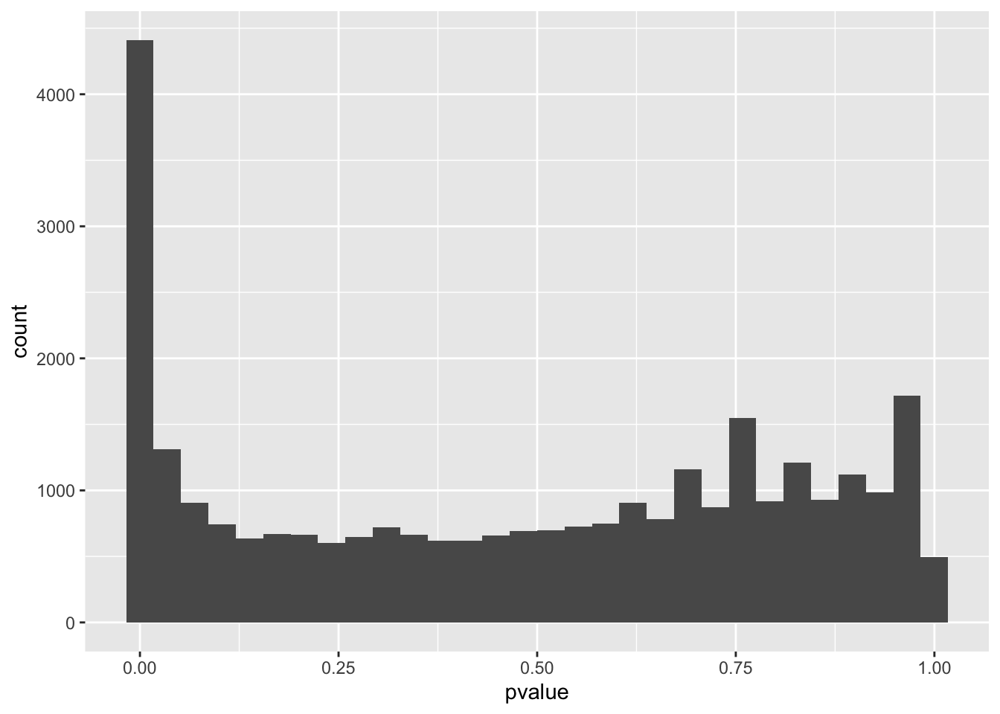

renv::restore()* The library is already synchronized with the lockfile.Restore project dependencies:
renv::restore()* The library is already synchronized with the lockfile.Load Bioconductor packages:
library(DESeq2)Load CRAN packages:
library(DT)
library(RColorBrewer)
library(ggplot2)
library(hues)
library(pheatmap)Load GitHub packages:
Read experiment data:
counts <- read.table("data/counts.tsv")
samples <- read.table("data/samples.tsv")Define condition and batch:
samples$condition <- factor(samples$dex)
samples$batch <- factor(samples$cell)Construct colour palettes:
condition.palette <- iwanthue(nlevels(samples$condition))
names(condition.palette) <- levels(samples$condition)Create a DESeqDataSet object:
dds <- DESeqDataSetFromMatrix(
countData = counts,
colData = samples,
design = ~ 0 + condition + batch
)Remove rows of the DESeqDataSet that have no counts, or only a single count across all samples:
dds <- dds[ rowSums(counts(dds)) > 1, ]rld <- rlog(dds, blind = FALSE)dist.values <- dist(t(assay(rld)))
dist.matrix <- as.matrix(dist)
dist.colors <- colorRampPalette(rev(brewer.pal(n = 9, name = "Blues")))(100)
dist.breaks <- seq(0, max(dist.values), length = 100)
pheatmap(
mat = dist.matrix,
color = dist.colors,
breaks = dist.breaks,
clustering_distance_rows = dist.values,
clustering_distance_cols = dist.values,
annotation_row = data.frame(condition = dds$condition, row.names = colnames(dds)),
annotation_colors = list(condition = condition.palette)
)plotPCA(rld, intgroup = c("condition", "batch"))Compute the MDS for the distances calculated from the rlog transformed counts:
mds.mat <- cmdscale(dist.matrix)
colnames(mds.mat) <- c("MDS.1", "MDS.2")
mds.dat <- as.data.frame(mds.mat)
mds.dat <- cbind(mds.dat, colData(dds))
ggplot(mds.dat, aes(MDS.1, MDS.2, color = condition, shape = batch)) +
geom_point() +
scale_colour_manual(values = condition.palette) +
theme_bw()Run the differential expression pipeline on the raw counts:
dds <- DESeq(dds)estimating size factorsestimating dispersionsgene-wise dispersion estimatesmean-dispersion relationshipfinal dispersion estimatesfitting model and testingcontrasts <- list(
"trt-untrt" = c("condition", "trt", "untrt")
)res <- mapply(results, contrast = contrasts, MoreArgs = list(object = dds))Warning in instance$preRenderHook(instance): It seems your data is too big
for client-side DataTables. You may consider server-side processing: https://
rstudio.github.io/DT/server.htmlPlot

Plot histogram of p-values for each contrast:
`stat_bin()` using `bins = 30`. Pick better value with `binwidth`.
Report the version numbers of R and all the packages used in this session:
sessionInfo()R version 4.1.1 (2021-08-10)
Platform: x86_64-apple-darwin17.0 (64-bit)
Running under: macOS Big Sur 10.16
Matrix products: default
BLAS: /Library/Frameworks/R.framework/Versions/4.1/Resources/lib/libRblas.0.dylib
LAPACK: /Library/Frameworks/R.framework/Versions/4.1/Resources/lib/libRlapack.dylib
locale:
[1] en_GB.UTF-8/en_GB.UTF-8/en_GB.UTF-8/C/en_GB.UTF-8/en_GB.UTF-8
attached base packages:
[1] parallel stats4 stats graphics grDevices datasets utils
[8] methods base
other attached packages:
[1] pheatmap_1.0.12 hues_0.2.0
[3] ggplot2_3.3.6 RColorBrewer_1.1-3
[5] DT_0.22 DESeq2_1.32.0
[7] SummarizedExperiment_1.22.0 Biobase_2.52.0
[9] MatrixGenerics_1.4.3 matrixStats_0.62.0
[11] GenomicRanges_1.44.0 GenomeInfoDb_1.28.4
[13] IRanges_2.26.0 S4Vectors_0.30.2
[15] BiocGenerics_0.38.0
loaded via a namespace (and not attached):
[1] bitops_1.0-7 bit64_4.0.5 httr_1.4.2
[4] tools_4.1.1 bslib_0.3.1 utf8_1.2.2
[7] R6_2.5.1 DBI_1.1.2 colorspace_2.0-3
[10] withr_2.5.0 tidyselect_1.1.2 bit_4.0.4
[13] compiler_4.1.1 cli_3.3.0 DelayedArray_0.18.0
[16] labeling_0.4.2 sass_0.4.1 scales_1.2.0
[19] genefilter_1.74.1 stringr_1.4.0 digest_0.6.29
[22] rmarkdown_2.14 XVector_0.32.0 pkgconfig_2.0.3
[25] htmltools_0.5.2 fastmap_1.1.0 htmlwidgets_1.5.4
[28] rlang_1.0.2 rstudioapi_0.13 RSQLite_2.2.13
[31] farver_2.1.0 jquerylib_0.1.4 generics_0.1.2
[34] jsonlite_1.8.0 crosstalk_1.2.0 BiocParallel_1.26.2
[37] dplyr_1.0.9 RCurl_1.98-1.6 magrittr_2.0.3
[40] GenomeInfoDbData_1.2.6 Matrix_1.4-1 Rcpp_1.0.8.3
[43] munsell_0.5.0 fansi_1.0.3 lifecycle_1.0.1
[46] stringi_1.7.6 yaml_2.3.5 zlibbioc_1.38.0
[49] grid_4.1.1 blob_1.2.3 crayon_1.5.1
[52] lattice_0.20-45 Biostrings_2.60.2 splines_4.1.1
[55] annotate_1.70.0 KEGGREST_1.32.0 locfit_1.5-9.5
[58] knitr_1.39 pillar_1.7.0 geneplotter_1.70.0
[61] XML_3.99-0.9 glue_1.6.2 evaluate_0.15
[64] renv_0.15.4 BiocManager_1.30.17 png_0.1-7
[67] vctrs_0.4.1 gtable_0.3.0 purrr_0.3.4
[70] assertthat_0.2.1 cachem_1.0.6 xfun_0.30
[73] xtable_1.8-4 survival_3.3-1 tibble_3.1.6
[76] AnnotationDbi_1.54.1 memoise_2.0.1 ellipsis_0.3.2